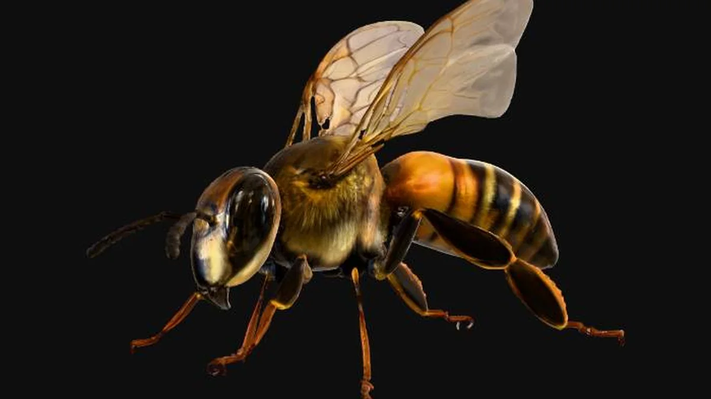
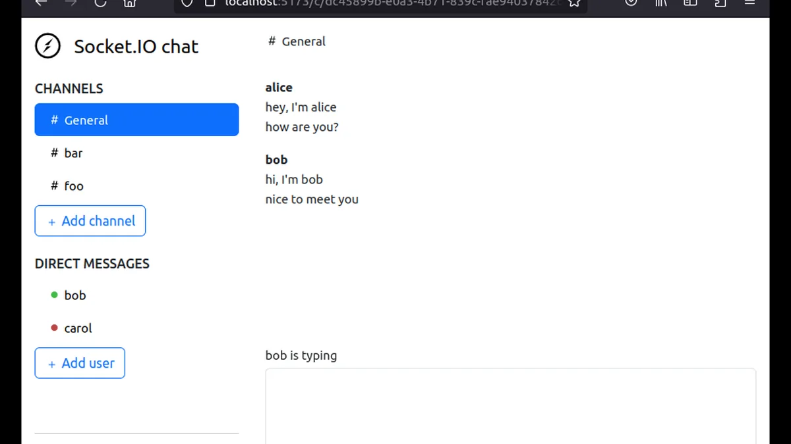
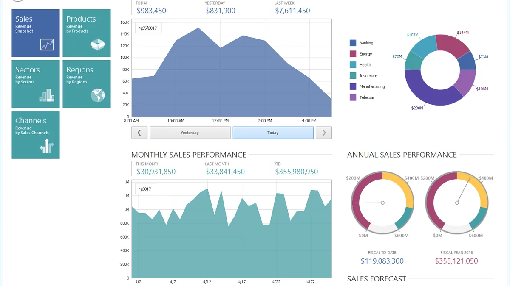

Merhaba
Ben Enes
Web geliştiriyorum, yapay zekâyı deniyorum ve öğrendiklerimi gerçek projelere dönüştürüyorum.
Kim olduğumu
öğrenin
Alanya Alaaddin Keykubat Üniversitesi Bilgisayar Mühendisliği öğrencisiyim. Kayseri OSB Teknik Koleji Bilişim Teknolojileri bölümünden mezun oldum ve yazılım alanında staj deneyimi kazandım.
C#, C++, JavaScript, SQL, Firebase ve Linux gibi teknolojilerle çalışıyorum. Arduino tabanlı uzaktan kontrol ve otomasyon sistemleri başta olmak üzere farklı projeler geliştiriyorum. Bunun yanında robotik projelerde takım liderliği yaptım.
Teknolojileri gerçek problemlere uygulamayı ve fikirleri çalışan sistemlere dönüştürmeyi seviyorum. Bu site de üretim sürecimin bir kaydı.
Birlikte çalışalımElektronik
Projeler
Başarılarım
ve deneyimlerim
MEB Robotics Competition
— Takım Liderliği & Yarışma Süreci
Kayseri OSB Teknik Koleji adına MEB Robotics Competition'a katıldım. Takım lideri olarak yarı finali birinci tamamlayıp Türkiye finalinde 4. olduk. Yarışma boyunca takım çalışması, hızlı problem çözme ve baskı altında karar verme konusunda benim için farklı ve öğretici bir deneyim oldu.
Neler
yapabilirim?
Web Tasarımı
Modern ve kullanıcı dostu web siteleri tasarlıyorum. Kod yapısına ve estetiğe önem veririm.
Grafik Tasarımı
Logo, afiş ve sosyal medya içerikleri için özgün grafik tasarımları üretiyorum.
Yapay Zekâ Entegrasyonu
Yapay zekâ servislerini web uygulamalarına ve projelere entegre ediyorum. Web agentler Geliştiriyorum.
Otomasyon Sistemleri
Tekrarlayan işlemleri azaltmak ve işleri kolaylaştırmak için otomasyon sistemleri geliştiriyorum.Bunu kendim içinde yapıyorum
Elektrik-Elektronik Sistemleri
Elektronik devreler, mikrodenetleyiciler, sensörler ve donanım entegrasyonu üzerine çalışmalar yapıyorum. Yazılım ve elektroniği bir araya getiren otomasyon sistemleri, gömülü sistemler ve uygulamalı elektronik projelerinde görev almaya ve yeni projeler geliştirmeye açığım.
Egitim
Öğrendiğim teknolojileri ve geliştirdiğim projeleri anlaşılır şekilde paylaşmaya çalışıyorum.
Seçili
projeler

3D Arı Animasyonlu Web Sitesi

Online Mesajlaşma Uygulaması
Hızlı Yazma Testi

Şirket Otomasyonu
Yayındaki
sitelerim
Yükleniyor…
Size Aktarmak iztedigim Bilgiler
Yükleniyor…
Ata'ma
saygıyla
“Muhtaç Oldugun Kudret Damarlarındaki Asil Kanda Mevcuttur”
Bu köşeyi süs olsun diye açmadım. Bu topraklarda okuyabiliyor, üretebiliyor ve hayallerimin peşinden gidebiliyorsam bunu O'na ve o zor günlerde bu ülkeyi kuran herkese borçluyum. Teknolojiyle uğraşan bir genç olarak, O'nun bilime ve akla verdiği değeri kendi işimde yaşatmaya çalışıyorum.
Ne zaman zorlansam, ne zaman “olmuyor” desem; azmi, disiplini ve “muhtaç olduğun kudret damarlarındaki asil kanda mevcuttur” cümlesini hatırlıyorum. Bu köşe, minik de olsa, O'na duyduğum saygının ve şükranın samimi bir ifadesidir.
Birlikte bir şeyler
yapalım
Bir projeniz mi var? Birlikte çalışmak mı istiyorsunuz? Mesaj gönderin, en kısa sürede dönüş yapayım.
Yönetici Girişi
Devam etmek için şifrenizi girin
Projeyi Düzenle
Değişiklikler anında Firestore'a kaydedilir.